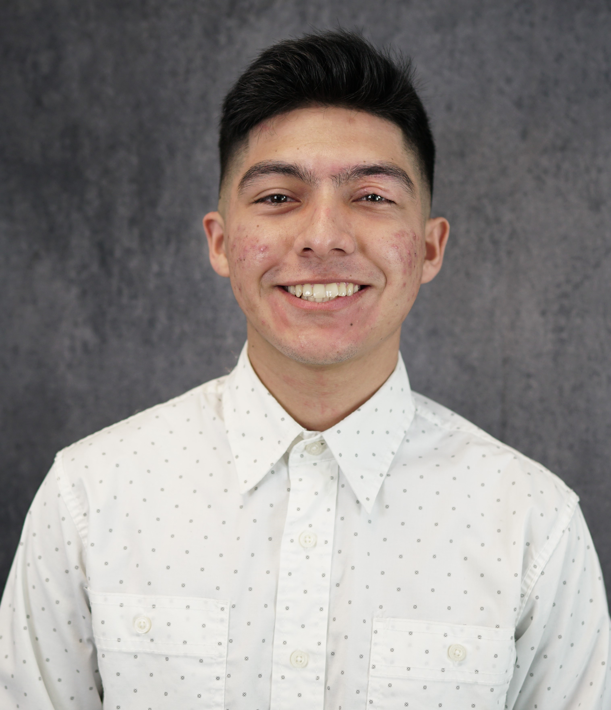

Yahir Badillo

Summary
I am currently a student at UC Merced.
Education
- Bachelor of Science, Computer Science and Engineering - University of California Merced (2021-2025)
Projects
Membership/Activities
- Chowchilla Union High School Tech Club - Public Relations Lead | Merced, CA
August 2020 - June 2021
- Created flyers to promote upcoming club events such as monthly meengs, fundraisers, and field trips.
- Managed the clubs social media page where I would post flyers of upcoming club events.
- California Scholarship Federaon - Member | Chowchilla, CA
August 2020 - June 2021
- Maintained a minimum GPA of 3.5, took core curriculum classes, and worked towards earning a scholarship offered by CSF.
- Received funding to visit college campuses in the UC system as well as other colleges in California.
Skills
- Programming Languages: Python(Beginner), JavaScript(Beginner), C++(Beginner)
- Technical Skills: Microsoft Office, Google Docs
Honors & Awards
- Travis Lindsay Foundaon - Travis Lindsay Memorial Scholarship (May 2021)
- UC Merced Chancellor - Chancellor’s Honors List (Spring 2022)